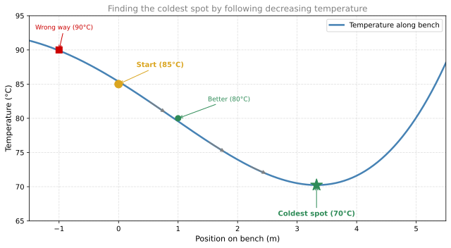
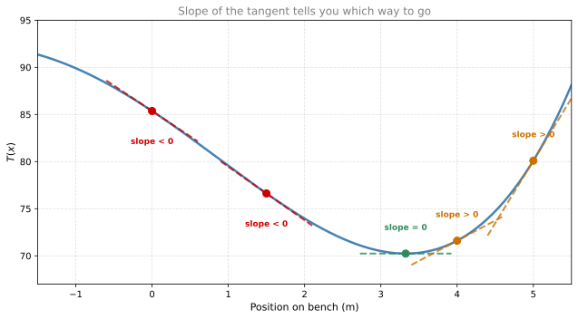
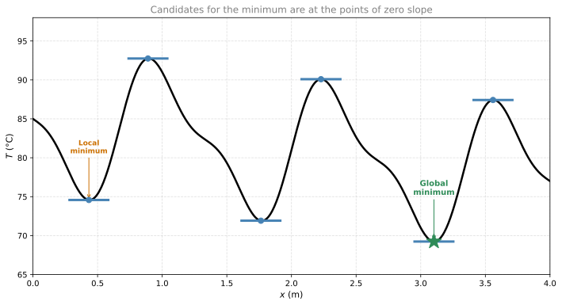
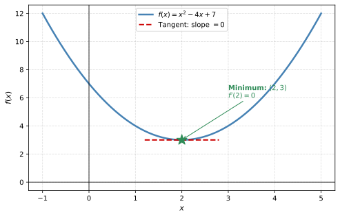
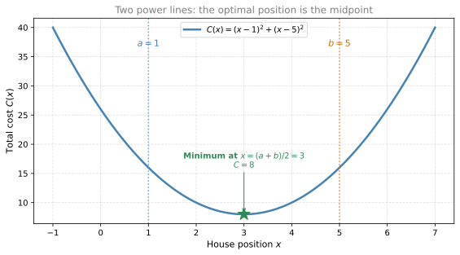
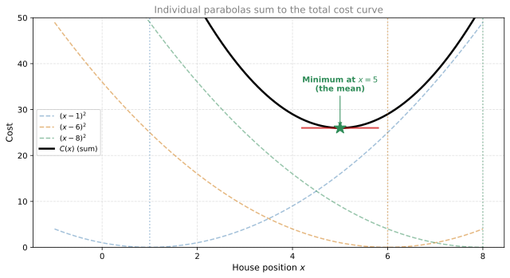

Optimization
calculus
By now you have lots of tools to work with derivatives. But what are they useful for, beyond calculating rates of change? In machine learning, the main…
By now you have lots of tools to work with derivatives. But what are they useful for, beyond calculating rates of change? In machine learning, the main application of derivatives is optimization: finding the maximum or minimum value of a function.
This matters because in machine learning you want to find the model that best fits your data. To do this, you define an error function (also called a loss function) that measures how far your current model is from the ideal one. When you minimize this error function, you get the best model. Derivatives tell you which direction to move to make the error smaller.
Sauna Analogy
Imagine you’re sitting on a bench in a sauna and it’s too hot. You want to find the coldest spot on the bench. All you have is a thermometer.
- You start at some position. The thermometer reads 85°C.
- You try moving left. It reads 90°C. That’s worse, it got hotter.
- You try the other direction (right). It reads 80°C. Better!
- You keep moving right, always recording lower temperatures: 77, 74, 72…
- Eventually you reach a point where moving in any direction makes it hotter. The thermometer reads 70°C.
You conclude: this must be the coldest spot.
Connection to Derivatives
Now look at the slope of the tangent line at each point along the bench:
- Where moving right leads to a colder spot, the slope is negative (the function is decreasing).
- Where moving left leads to a colder spot, the slope is positive (the function is increasing to the right, so you’d want to go left).
- At the coldest spot itself, the slope is zero. No matter which direction you move, it gets hotter.

This is the key insight:
Note
At a minimum (or maximum), the derivative is zero. If \(f'(x_0) = 0\), then \(x_0\) is a candidate for a minimum or maximum of \(f\).
Local Minima vs. Global Minimum
For simple functions (like the parabola above), there’s only one point where \(f'(x) = 0\), and it’s the minimum. But real-world functions can be more complicated:

In this more complicated function, there are multiple points where \(f'(x) = 0\):
- Local minima: points where the function is lower than its immediate neighbors, but not necessarily the lowest overall.
- Local maxima: points where the function is higher than its immediate neighbors.
- Global minimum: the absolute lowest point of the function.
When optimizing, all points with zero derivative are candidates. You still need to check which one is the actual global minimum. But the derivative narrows the search from infinitely many points down to just a few.
Optimization Recipe
To find the minimum of a differentiable function \(f(x)\):
- Compute the derivative \(f'(x)\).
- Solve \(f'(x) = 0\) to find the critical points.
- Check which critical points are minima (not maxima or saddle points).
- Compare the values \(f(x)\) at all minima to find the global minimum.
Example: Find the minimum of \(f(x) = x^2 - 4x + 7\).
- \(f'(x) = 2x - 4\)
- Set \(f'(x) = 0\): \(2x - 4 = 0 \implies x = 2\)
- \(f(2) = 4 - 8 + 7 = 3\)
So the minimum value is \(3\), occurring at \(x = 2\).

Why This Matters for Machine Learning
In machine learning, the function you’re minimizing is a loss function (or cost function) that measures how wrong your model is. For example:
- In linear regression: the loss is the sum of squared errors between predictions and actual values.
- In neural networks: the loss could be cross-entropy, measuring how far your predicted probabilities are from the true labels.
The “bench” is the space of all possible model parameters (weights). The “temperature” is the loss. You want to find the parameter values that give the lowest loss, just like finding the coldest spot on the bench.
The derivative of the loss with respect to each parameter tells you which direction to adjust that parameter to reduce the error. This is the foundation of gradient descent, which you’ll see in later notes.
Worked Example, House and Power Lines
Here’s a more concrete optimization problem that directly connects to machine learning. Imagine you need to build a house somewhere along a road, and you must connect it to several power lines that are located at fixed positions. The cost of connecting to each power line is proportional to the square of the distance (longer cables are thicker and more expensive). Your goal: place the house to minimize the total connection cost.
This matters because the cost function in this problem is essentially the same as the squared error used to train linear regression and many neural networks.
One Power Line
Let’s start simple. If there’s only one power line at position \(a\), and your house is at position \(x\), the cost is \((x - a)^2\). Where should you build? Right on top of it: \(x = a\), cost \(= 0\). Easy.
Two Power Lines
Now suppose there are two power lines: a blue one at position \(a\) and an orange one at position \(b\) along a road. Your house is at position \(x\). The distances are \(|x - a|\) and \(|x - b|\), but since we square them, it doesn’t matter if they’re negative:
\[ \text{Total cost: } C(x) = \underbrace{(x - a)^2}_{\text{cost to blue}} + \underbrace{(x - b)^2}_{\text{cost to orange}} \]
You can visualize each cost term as the area of a square: \((x-a)^2\) is a square with side length \(|x-a|\). The total cost is the total area of both squares. If the house is too far left, the orange square is huge. Too far right, the blue square is huge. Somewhere in the middle, both squares are small.
Let’s find the minimum using calculus. Take the derivative and set it to zero:
\[ C'(x) = 2(x - a) + 2(x - b) = 0 \]
Divide by 2:
\[ (x - a) + (x - b) = 0 \implies 2x - a - b = 0 \implies x = \frac{a + b}{2} \]
The optimal position is the mean of \(a\) and \(b\), the midpoint of the two power lines. Let’s verify with \(a = 1\), \(b = 5\):

Three Power Lines
Now suppose there are three power lines at positions \(a = 1\), \(b = 6\), and \(c = 8\). The total cost is:
\[ C(x) = (x - a)^2 + (x - b)^2 + (x - c)^2 \]
The same approach: take the derivative and set it to zero:
\[ C'(x) = 2(x - a) + 2(x - b) + 2(x - c) = 0 \]
Divide by 2 and rearrange:
\[ 3x - a - b - c = 0 \implies x = \frac{a + b + c}{3} \]
The optimal position is the mean of the three positions: \(\frac{1 + 6 + 8}{3} = 5\).
Geometric view: You can place a parabola \((x-a)^2\) centered on each power line. The height of each parabola at position \(x\) is the cost of connecting to that line. Summing all three parabolas gives the total cost curve (black). Its minimum is at the mean.

Generalization to \(n\) Power Lines
The pattern is clear. For \(n\) power lines at positions \(a_1, a_2, \ldots, a_n\), the cost function is:
\[ C(x) = \sum_{i=1}^{n} (x - a_i)^2 \]
Taking the derivative:
\[ C'(x) = \sum_{i=1}^{n} 2(x - a_i) = 2nx - 2\sum_{i=1}^{n} a_i = 0 \]
Solving:
\[ x = \frac{a_1 + a_2 + \cdots + a_n}{n} = \bar{a} \]
The optimal position is always the mean of the data points. This is exactly the squared loss (or mean squared error) used in machine learning. When you train a model by minimizing squared error, you are doing exactly this: finding the “position” (parameter value) that minimizes the sum of squared distances to the data.
Review Questions
1. If \(f'(x_0) = 0\), does that guarantee \(x_0\) is a minimum?
TipAnswer
No. A point where \(f'(x) = 0\) is a candidate (called a critical point), but it could be a maximum, a minimum, or neither (a saddle point / inflection point). You need additional information (like the second derivative or checking nearby values) to determine which.
1. Find the minimum of \(f(x) = x^2 + 6x + 10\).
TipAnswer
\(f'(x) = 2x + 6\). Setting \(f'(x) = 0\): \(2x + 6 = 0 \implies x = -3\). The minimum value is \(f(-3) = 9 - 18 + 10 = 1\).
1. In the sauna analogy, what does a “local minimum” correspond to?
TipAnswer
A local minimum is a spot on the bench that is colder than its immediate neighbors, but not necessarily the absolute coldest spot on the entire bench. If you only feel around your current position, it seems like the coldest, but there might be an even colder spot farther away.
1. Why does the derivative being negative at a point tell you to move right to decrease the function?
TipAnswer
A negative derivative means the function is decreasing as \(x\) increases (moving right). So moving to the right takes you to smaller values of \(f\), which is what you want when minimizing.